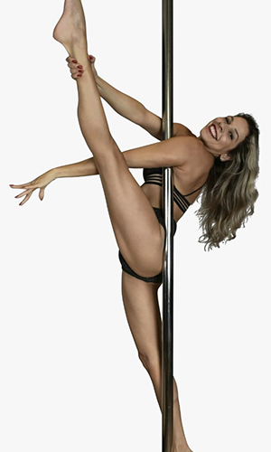
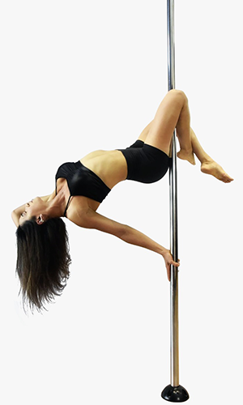
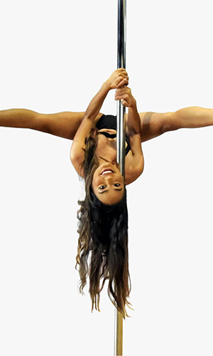
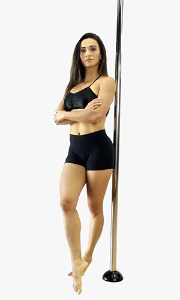

Aline Barbizan
- Praticante de pole dance desde 2014.
- Formada no nível básico e intermediário de Pole Sport.
- Tem em seu currículo vários workshops de pole sensual e flexibilidade.
- Atleta em 2017, onde competiu no Arnold Classic Integrant da Cie da Dança Fit by Dance de
2011 a 2018.
- Hoje professora no Downtown Studio de Dança

Juliana Muniz
- Sócia proprietária do Downtown Stúdio de Dança.
- Tem como bagagem mais de 10 anos de experiência.
-
Hoje umas das maiores treinadoras do país, com titulos nacionais e internacionais, ela
comanda a nossa equipe de professores.
Wesley (Greg)
-
Com início no circo aos 14 anos de idade, nosso professor teve acesso a várias metodologias,
participando de grandes espetáculos com grandes produtoras como a MP produções (Lisbela e o
prisioneiro).
- Depois disso ganhou muita experiência internacional passando por lugares incríveis como
Egito, Tunísia e
Finlândia.
- Hoje com uma experienência ímpar temos o prazer de tê-lo em nossa equipe.

Caroline Sais
- A mais de 3 anos em contato com o Pole e suas vertentes.
- Formada pela metodologia da treinadora Juliana Muniz.
- Atleta com título de 1 Lugar, Exotic Amador no Campeonato Aero Dance 2019.
- Ministrando Aulas desde 2020.

Edna de Almeida
- Bacharel e licenciatura em Educação Física desde 2018.
- A 7 anos praticante de Pole Dance.
- Participou do campeonato Interpole 2020.
- Curso intensivo de aprimoramento técnico nível I e II com Erika Thompson.
- Curso intensivo de pole instrutor básico I e II metodologia Juliana Muniz.
- Atualmente ministrando aulas de Pole Dance e irá inicia uma nova modalidade no downtown o Strong pole
Sport.